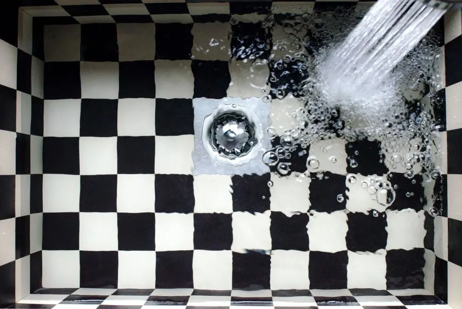

Local GuidesDrain & Sewer
Why is my drain in Plant City constantly clogging
If your drain in Plant City keeps clogging, the problem is almost never the drain itself. Here are the real causes and how to stop the cycle.

If your drain in Plant City keeps clogging, the cause is almost always one of six things: grease buildup, root intrusion, aging cast iron or clay pipes, soap and hair accumulation, a sagging sewer line, or a venting problem. Snaking the drain clears the symptom but leaves the cause in place - which is why the clog returns three weeks later. Below we walk through each cause, how to tell them apart, and what actually stops the cycle.
We run drain cleaning Plant City FL calls every week on the same streets, and the pattern is consistent. Once you know what you are looking at, the fix gets a lot simpler.
The short answer: your drain isn't the problem
Why is my drain in Plant City constantly clogging is a question about the pipe, not the drain opening itself. The drain is just the entry point. The blockage is forming somewhere in the branch line or the main sewer lateral, and that is where the real problem lives.
Plant City sits on a mix of 1920s downtown plumbing, 1970s slab-on-grade subdivisions, and newer construction out toward the bypass. Each era has its own failure pattern. A 1950s home off Collins Street with original cast iron behaves nothing like a 2015 build near Walden Lake. That is why one-size-fits-all drain advice rarely works here.
If you have snaked the same drain three times in six months, stop snaking. You are treating a symptom.
Why does my drain keep clogging in Plant City FL?
Recurring drain clogs Plant City FL homeowners deal with almost always trace back to one of three conditions: buildup that never fully clears, a physical defect in the pipe, or a slow-draining fixture that was never fixed properly the first time.
Here is the mechanic's view. When a drain clogs, the blockage is rarely a single solid object. It is a mat of grease, soap scum, hair, and food particles that has been building for months. A hand snake punches a hole through the middle. Water flows again. The mat is still there, now thicker on the sides, and it catches the next round of debris faster than before.
That is the loop. Each "fix" makes the next clog come sooner.
The second condition is a defect. A cracked pipe, an offset joint, a belly where the line has settled, or roots pushing through a seam. Water slows at the defect, debris drops out of suspension, and you get a clog at the same spot every time.
The third condition is a fixture that drains slowly but never fully stops. A bathroom sink that takes 40 seconds to clear is already 70% blocked. Most people live with it until it stops completely.
The 6 most common causes of drain clogs in Plant City
These are the six causes we find on the majority of repeat-clog calls in Plant City. They are listed roughly in order of how often we see them.
1. Grease buildup in drains Plant City Florida kitchens
Cooking grease is the number one cause of kitchen drain clogs in this area. It goes down hot and liquid, cools inside the pipe, and sticks to the walls. Over time the layer thickens until the pipe is down to a pencil-width opening.
"I pour it down with hot water" does not work. Hot water moves the grease 10 to 15 feet down the line and then it cools anyway. The only reliable fix is a scrape-and-trash habit and periodic hot-water flushes with a degreaser.
2. Root intrusion in drain lines Plant City
Plant City has a lot of mature oak, camphor, and ficus. Those roots seek moisture, and a sewer lateral is the wettest thing in the yard. A hairline crack or a loose joint is all it takes. Roots enter, expand, and form a mat that catches everything.
Signs of root intrusion: clogs that come back every 60 to 90 days, gurgling from the toilet when you run the washing machine, and a yard that stays soggy over the sewer line. If you see any of those, stop snaking and get a camera inspection.
3. Aging cast iron and clay sewer lines
Homes built before 1975 in Plant City - including a lot of the housing near Historic Downtown Plant City QuickFlow Plumbing territory - often still have cast iron drain lines or orangeburg clay sewer laterals. Cast iron scales on the inside until the interior diameter shrinks by half. Clay cracks at the joints and lets roots in.
No amount of snaking fixes a scaled cast iron line. It has to be descaled or replaced.
4. Soap scum and hair in bathroom drains
Bar soap leaves a waxy residue. Combined with hair and shampoo, it forms a felt-like plug that sits right at the P-trap or just past it. This is the most common cause of a constantly clogging shower or tub drain.
A hair catcher costs $8 and prevents most of these. We still see maybe one in five bathrooms without one.
5. A sagging or bellied sewer line
Ground settling, root pressure, or a poorly bedded line creates a low spot where water pools instead of draining. Debris settles there. The clog always forms at the same distance from the house - usually 20 to 40 feet out.
If the plumber's snake hits resistance at the same footage every time, that is a belly, not a clog.
6. Venting problems
A blocked or improperly installed vent stack means the drain cannot pull air. Water glugs, drains slowly, and debris settles because the flow is never strong enough to carry it away. Squirrels, birds, and wasp nests are common vent blockers in Central Florida.
What causes repeated drain clogs in Plant City FL?
Repeated drain clogs in Plant City FL almost always mean the original clog was never fully cleared, or there is a physical defect in the pipe. Both are diagnosable in under an hour with the right equipment.
Here is how we tell them apart on a service call:
- Same drain, same distance every time: physical defect - crack, offset joint, or belly.
- Multiple fixtures backing up at once: main sewer lateral issue, not a branch line.
- One fixture, no pattern: buildup that was never fully cleared.
- Gurgling and slow drains throughout the house: venting or a partially blocked main.
We run a camera down the line on any second-time call. It costs less than a third visit and it tells us exactly what we are dealing with. Most homeowners are surprised by what shows up - a 30-year-old root mass, a collapsed clay joint, or a grease layer the thickness of a finger.
Once we know the cause, the fix is usually straightforward. Hydro-jetting clears buildup down to bare pipe. A descaling tool handles cast iron. Root cutting plus a foaming treatment buys time, and a spot repair or liner handles the defect permanently.
Common mistakes that make clogs worse
The wrong response to a clog turns a $200 drain cleaning into a $4,000 sewer line repair. These are the mistakes we see most often.
- Pouring chemical drain cleaner down a slow drain. Drano and similar products are caustic. They eat through grease and hair, but they also eat through cast iron, PVC glue joints, and rubber gaskets. On a fully blocked drain, the chemical sits in the pipe and damages it. On a partially blocked drain, it clears a channel and leaves the rest of the blockage in place.
- Snaking the same drain over and over. A hand snake clears a hole, not the pipe. If you have snaked the same drain twice in a year, the third call should be a camera inspection.
- Using a plunger on a chemical-filled drain. If you have already poured chemicals in, do not plunge. You will splash caustic liquid back up.
- Flushing "flushable" wipes. They are not. They do not break down, and they snag on every root and rough joint in the line. We pull wipes out of Plant City sewer lines weekly.
- Ignoring a slow drain. A drain that takes 30 seconds to clear is already mostly blocked. Fixing it then costs a fraction of fixing it after a backup.
- Running the garbage disposal as a trash can. Coffee grounds, eggshells, potato peels, and rice all settle and form a paste. The disposal handles soft food scraps only.
How to prevent drain clogs in Plant City
Preventive drain maintenance Plant City homeowners can do at home costs almost nothing and cuts repeat clogs by more than half in our experience.
Kitchen:
- Wipe grease out of pans with a paper towel and trash it. Never pour it down the sink.
- Run cold water for 15 seconds before and 30 seconds after using the disposal.
- Once a month, fill the sink with hot water, add a cup of white vinegar and half a cup of baking soda, then pull the stopper. This loosens the grease film before it hardens.
Bathrooms:
- Install hair catchers in every tub and shower drain. Empty them weekly.
- Once a month, pour a kettle of boiling water down each bathroom drain. This melts soap scum at the trap.
- Never flush wipes, paper towels, feminine products, or "flushable" cat litter.
Whole-house:
- Know where your main cleanout is. If you do not, we can mark it on a service call.
- If you have mature trees within 20 feet of the sewer line, book a camera inspection every 18 to 24 months.
- If your home was built before 1975, ask about the pipe material. Cast iron and clay both have a service life, and knowing yours changes how you plan.
For homes with a recurring problem, we recommend a professional hydro-jet once a year. It scours the pipe walls back to bare material, which resets the clock. Typical 2026 pricing in this area runs $250 to $450 for a standard residential line, depending on length and access.
When to call a professional
Call a professional when the same drain has clogged twice in 12 months, when more than one fixture backs up at once, when you smell sewage in the yard, or when you hear gurgling from a fixture you are not using.
Those are the signals that the problem is in the pipe, not the drain opening. A hand snake and a bottle of chemicals will not fix a cracked clay joint or a root mass.
At QuickFlow Plumbing, we run a camera on every repeat-clog call before we quote anything. You see the footage, we explain what we found, and you get a flat price before we start. If a $250 hydro-jet will solve it, that is what we recommend - not a $6,000 line replacement.
We also handle the plumbing work around the drain itself, from plumbing repairs Plant City FL on a leaking trap to full residential plumbing Plant City FL service when a slow drain turns out to be a bigger issue. If the problem is at a rental or a storefront, our commercial plumbing Plant City FL team handles those calls on the same schedule.
If it is after hours and you have water backing up, our emergency plumber Plant City line is staffed around the clock.
Frequently Asked Questions
Why does my drain in Plant City keep clogging?
Because the underlying cause was never fixed. Snaking clears a hole through the blockage but leaves the buildup, root mass, or pipe defect in place. Most repeat clogs in Plant City trace back to grease, root intrusion, or aging cast iron and clay lines.
What causes repeated drain clogs in Plant City FL?
Three things, in order: buildup that was never fully cleared, a physical defect like a crack or belly in the pipe, and venting problems. If the same drain clogs twice in 12 months, a camera inspection will tell you which one you have.
How can I stop my drain from clogging in Plant City?
Wipe grease into the trash, install hair catchers, run hot water monthly through bathroom drains, and never flush wipes. If you have mature trees within 20 feet of the sewer line, book a camera inspection every 18 to 24 months.
Should I use chemical drain cleaner in Plant City?
No. Caustic cleaners damage cast iron, PVC joints, and rubber gaskets, and on a fully blocked drain they sit in the pipe and cause more harm than good. A plunger, a snake, or a professional hydro-jet is safer and more effective.
When should I call a plumber for a clogged drain in Plant City?
Call when the same drain has clogged twice in a year, when multiple fixtures back up at once, when you smell sewage outside, or when you hear gurgling from unused fixtures. Those point to a main line or pipe defect, not a simple clog.
Get help with QuickFlow Plumbing in Plant City
If your drain keeps coming back, we will find out why and fix it right the first time. QuickFlow Plumbing serves Plant City and the surrounding area with camera inspections, hydro-jetting, and honest flat-rate pricing.
Call us at 813-548-5096 and we will get a technician out to look at your line.